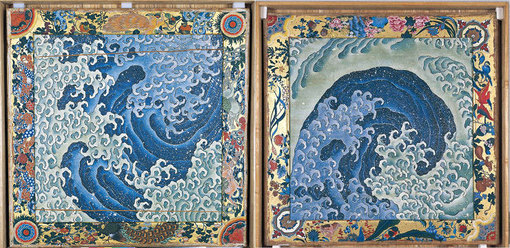
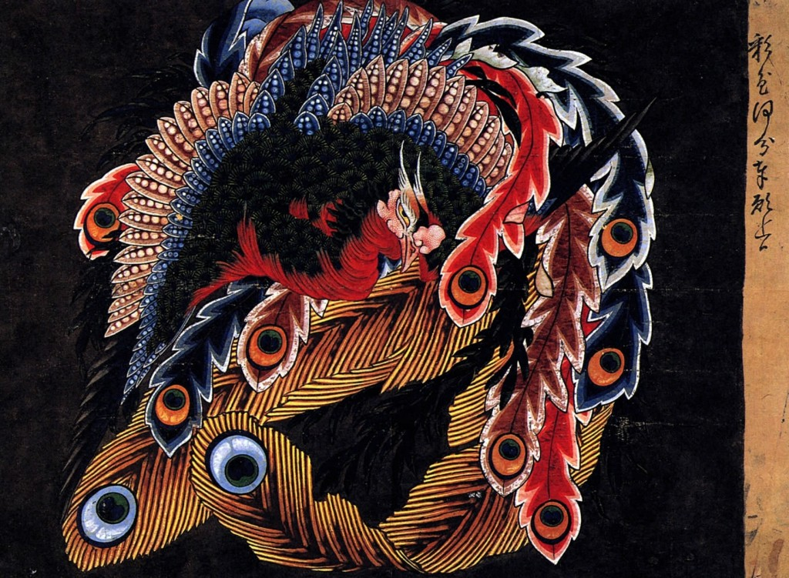
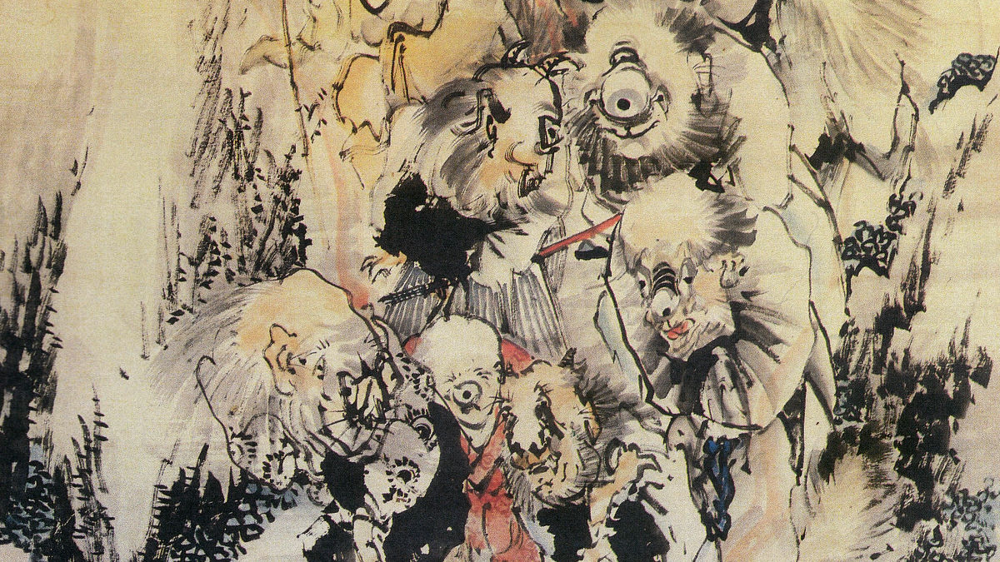

この額を
約束した男がいたOne man
promised it all.
小布施Obuse
3と&8
六斎市 ひと月に六度の市Market day, six times a month.
高井鴻山Takai
Kōzan1806–1883

学ぶLearning.
京都と江戸で16年16 years in Kyoto and Edo.
蔵を開く。He opened
the storehouses.
1836年 天保の大飢饉1836 · The Great Tenpō Famine
鴻山Kōzan
北斎Hokusai
—歳の巨匠を、家に迎えられますかCould you host a —-year-old master?
葛飾北斎『神奈川沖浪裏』Katsushika Hokusai, “The Great Wave”

葛飾北斎『怒涛図』男浪・女浪Hokusai, “Raging Waves” — male and female
私財で。Out of his
own pocket.
1両＝米で約4万円 江戸中〜後期1 ryō ≈ ¥40,000 in rice · mid–late Edo
破産Bankrupt.
実際に払った額は、記録にないWhat he actually paid: no record.
それでも、
教えた。Still,
he taught.
74歳 私塾「高矣義塾」At 74 — a private school, Kōi Gijuku
葛飾北斎『怒涛図』男浪・女浪Hokusai, “Raging Waves” — male and female

葛飾北斎『鳳凰』Katsushika Hokusai, “Phoenix”

『象と唐人図』北斎の原画による鴻山との合作と伝わる“Elephant and Chinese Men” — said to be a joint work

高井鴻山『妖怪図』Takai Kōzan, “Yōkai”
Danna-sama · Sensei
この2日間Your two days
この道を、200年前に誰が歩いた？Who walked this street 200 years ago?
この天井を描かせたのは誰？Who had this ceiling painted?
町の富は、どこへ使われた？Where did the town’s wealth go?
形が残ると、何が受け継がれる？When a form survives, what is handed down?
画材と部屋と時間を用意したのは誰？Who gave him paint, a room, and time?
「旦那様」と「先生」の意味は？What do “Danna-sama” and “Sensei” mean?
破産してまで、彼はHe went bankrupt for it.